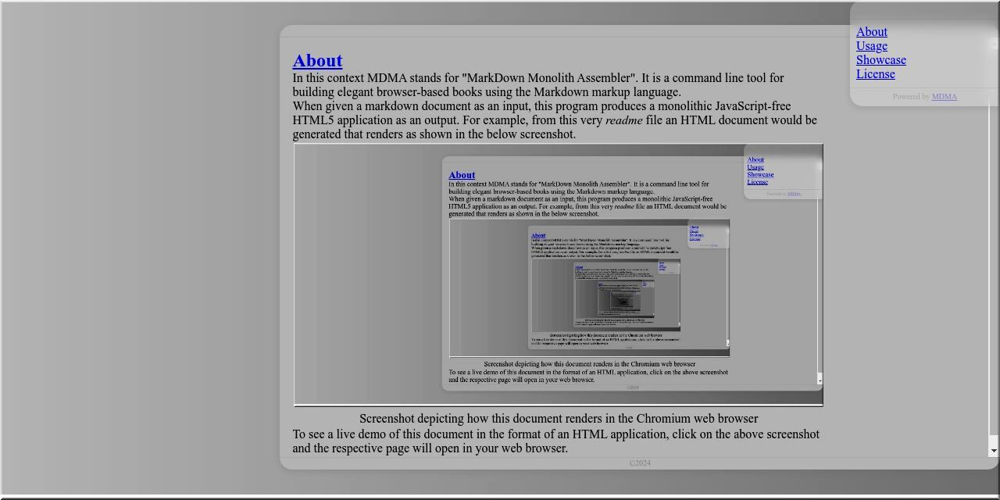

In this context MDMA stands for "MarkDown
Monolith Assembler". It is a command line tool
for building elegant browser-based books using
the Markdown markup language.
When given a markdown document as an input, this
program produces a monolithic JavaScript-free
HTML5 application as an output. For example, from
this very readme file an HTML document
would be generated that renders as shown in the
below screenshot.
|

|
|
Screenshot depicting how this document
renders in the Chromium web browser
|
To see a live demo of this document in the format
of an HTML application, click on the above
screenshot and the respective page will open in
your web browser.
MDMA makes use of the standard input, output and
error streams and follows the garbage in,
garbage out (GIGO) principle by design. If
the program is started with the -h
(short for --help) argument, then it
will only print its usage synopsis and exit.
In the following sections the usage synopsis is
given, followed by the most common build
instructions. Finally, libraries that need to be
installed on the host system for successful
compilation are listed.
Usage: mdma [OPTION]... [FILE]
General options:
--brief Print brief messages (default).
--debug Print debugging messages.
-f --framework Use a custom HTML framework file.
-h --help Display this usage information.
--minify Disable HTML indentation and wrapping.
--monolith Embed images and styles within the output.
-o --output Specify the output file (standard output).
-p --preview Set the image preview shrinking factor (8).
--verbose Print verbose messages.
-v --version Show version information.
Markdown dialect options:
--commonmark Use the CommonMark syntax.
--github Use Github flavored markdown (default).
If the FILE argument is missing, the
program will attempt to read a markdown document
from its standard input.
MDMA is written in C++ and should be trivial to
compile on most Linux based systems. Just go to
the src directory and type
make. If compilation fails, then most
likely you are missing some of the required
dependencies listed in the following section.
In order to compile this program from its
Makefile, the following libraries and
their respective header files must be present in
the system.
-
md4c — C Markdown parser
-
tinyxml2 — Simple XML
parser made for easy integration
-
tidy — A tool to tidy down HTML
code to a clean style
-
uriparser — Strictly RFC
3986 compliant URI parsing and handling
library written in C89
-
imlib2 — Library that
does image file loading, saving and
manipulation
-
curl — Command line tool and
library for transferring data with URLs
Next, some of the projects that have put MarkDown
Monolith Assembler into a good use are listed.
MarkDown Monolith Assembler has been authored by
Erich Erstu and is released under the MIT license.